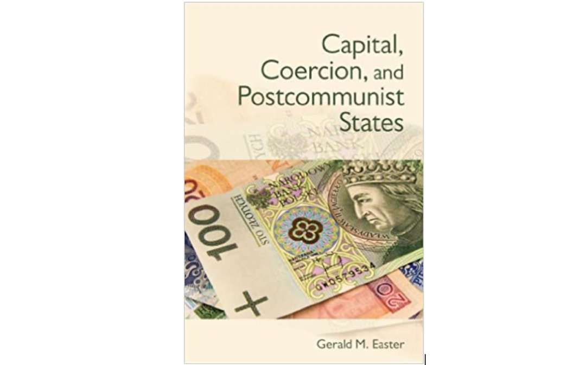

政观荐书丨Capital, Coercion, and Postcommunist States
原创 政文观止
政文观止Poliview
微信号 zhengwenguanzhi
功能介绍 从一群年轻人的视角出发，专业、专注、专解海内外比较政治经济研究的前沿佳作。
__发表于
#民主与民主化 34 个
#比较政治学 121 个
#国家建构与国家发展 70 个
作者简介： 杰拉德·伊斯特（Gerald M. Easter），美国波士顿学院政治学系教授、系主任，兼任哈佛大学戴维斯俄罗斯与欧亚研究中心研究员。他的主要著作包括《资本、强制力与后共产主义国家》（Capital, Coercion, and Postcommunist States, Ithaca: Cornell University Press, 2012，该书曾获戴维斯最佳社会科学图书奖、休伊特最佳政治经济学图书奖）和《国家重建：苏俄时期的人际关系网络与精英身份》（Reconstructing the State: Personal Networks and Elite Identity in Soviet Russia, New York: Cambridge University Press, 2000）等。他于1992年从哥伦比亚大学毕业，获政治学博士学位，其最新作品《女皇失落的宝藏：叶卡捷琳娜大帝、黄金时代杰作与一场传奇海难》（The Tsarina’s Lost Treasure: Catherine the Great, a Golden Age Masterpiece, and a Legendary Shipwreck, New York: Pegasus Books, 2000）围绕着商船玛丽亚女士号（Vrouw Maria）的遇难和发掘，抽丝剥茧，揭开沙俄时代艺术史和政治史面纱。
荐书简介
一般说来，国家建构是国家从社会攫取权力资源一系列累积性过程的总和。不过由于历史原因，上世纪90年代以来东欧的国家建设，则是在国家坐拥大量权力资源而社会孱弱且依赖国家的基础上开始的。因此，东欧的国家建构反而是国家向社会转移和重新分配权力资源的过程，甚至可以说其本质应当是社会建构。“国家的财税就是国家本身”；而“资本与强制力的多种组合产生出形形色色的国家”：既然如此，那么是什么要素决定着这个组合的配置，进而构造出国家的呢？因此作者自东欧国家的税制改革着手，充实后共产主义的国家建构理论。
作者分别概念化出两种理想的后共产主义国家类型，即契约型国家和攫取型国家：前者将旧制度遗存的权力资源重新分配，并在国家、社会场域间划定了明晰的分界线，国家的强制力资源得到去政治化，受到制度性的制衡，资本也得以转型，经济资源转变为受到法律保护的私有财产；相反，后者则依然享有不受制约的强制力资源，文官政府与法律的约束力就相对孱弱无效，私有资本只能任由国家予取予夺。
作者选取了波兰和俄罗斯两国作为主要考察对象，两国的起始条件具有非常多的相似性，但在应对上世纪80年代的财政危机（第二章）时两国又采取了相异的措施和指导精神，这就使得构建可比较性成为可能。随之，作者将两国的三轮税制改革展开比较（第三章），特别是揭开了台面下的非正式博弈与协商。作者也审视了税制转型阶段的国家- 社会互动模式，回答民众为何会缴税（第四章）。最后，作者还对两国的国家财政能力（第五章）和国家-社会关系的再塑造（第六章）作出观察和比较。
对于比较政治学的学生而言，本书具有很好的可读性和学习价值。首先是作者的研究设计和案例选择，这当然体现出研究者对文献的良好掌握，更重要的是个人要坚定自己的研究目标。其次，好的研究问题和设计也需要研究者具有好的执行能力，作者整合了来源复杂的海量史料和财政数据，但仍能化繁为简，体现出很好的证据处理能力；尽管研究包含了相当多统计数据，但研究方法和框架依然是质性的。最后，是作者对国家建构理论体系的补全，他通过描述从强制力和资本的互动和交易，给出了一个财税体制跨时空的动态理论框架。
在学理之外，东欧国家与我们的生活也有着密切的关系。但我们是否了解他们在上世纪末之后的变化，是否了解他们为何走上了截然不同的发展道路？这对于推进“17+1”合作、倡导“一带一路”的我们来说有着深刻的现实意义。这本书语言平实晓畅，将波兰、俄罗斯两国社会在剧烈震荡后的变化娓娓道来，即便抛开其理论部分，也仍是一本颇具阅读趣味和知识性的图书。

目录
·绪论
·迈向后共产主义国家的财政社会学
·旧制度的财政危机
·税制改革的政治学：达成（和破坏）财税协议
·税制转型下国家与社会的相遇
·建设后共产主义国家的财政能力
·税收与国家-社会关系的重构
·结论
书摘—第六章
市民社会的一项必要条件是私营部门的自组织。在转型期中的波兰，财税体制当中的资本竞争加强了社会的组织能力；国家并未抗拒这一发展，而是通过税收政策帮助推动这个进程。
在波兰，俱乐部、慈善组织和职业行会等非政府部门被称为国家和市场之外的“第三部门”。上世纪90年代初，波兰的社会极缺经济与组织资源，政府为此推出适度的免税政策，以鼓励海内外捐助人投资第三部门。到21世纪初，已有超过3,000家非政府组织登记注册。如将宗教和职业组织囊括在内，这个数字还要大得多：18,000家商会、5,000家教会组织、5,000家职业联合会以及5,000支志愿消防队。然而，第三部门此时依旧缺少资金来源和组织力，国家也开始更为主动地扶持市民社会发展。
通过《公共福利法》（the Public Benefit Law），税收政策也被用于支持市民社会的成长。这一法案创制出一套“百分比”制度，即纳税人可将自己个人所得税的1%划拨给一家社会组织，而非交付给国家。波兰并非第一个启用这一政策的东欧国家；它的起源可追溯到19世纪，当时是为了用以解决信仰天主教的国家的政教分离问题。波兰推行财政百分比制度的动力是自下而上的，来自于新兴的非政府组织。非政府倡议论坛协会（The Association for the Forum of Non-Governmental Initiatives，后简称“倡议论坛”）是其中的主要推手，这是一个由大大小小的非政府组织所组成的伞形集团。倡议论坛受到超过250家非政府组织的支持，他们于2001年9月向政府推出了一项草案，随即就开始积极游说各大政党，并在全国范围掀起了一场颇具声势的倡导运动。相较其他东欧国家，波兰版的“百分比”体制包括更多可供选择的非政府组织，不仅有慈善与教育组织，还有文化、环境及农村组织。社会民主党主席克瓦希涅夫斯基（Kwasniewski）和财政部部长贝尔卡（Belka）宣布支持这一推进社会发展的财政改革，这项法案用时超过一年才得以通过色姆（Sejm），直至2003年春季终于立法。
《公共福利法》既从1%的税费中划拨出国家补贴，也增多了向有资质的非政府组织捐款的免税项目。要取得资质，一家非政府组织必须证明其提供了重要的社会服务，或造福于全社会，或有利于某一个困难群体。劳动与社会政策部则负责监管非政府部门，并颁发“公共福利组织”（public beneficial organizations, PBO）的官方资质认证。取得行业内梦寐以求的公共福利组织资质的组织，不仅有文化和慈善组织，还包括那些支持人权、言论自由和政治监察团体等等具有明显政治性的组织。随着这项法案的生效，注册的非政府组织从2002年的36,500家，增长到2006年的55,000家；同时，基金会的数量从2002年的5,000家，增长到2006年的8,000家。参与这个项目的纳税人在前三年不断增多：2004年有80000人，到2005年的680000，再到2006年的1256000人。有资质非政府组织可用于免税的收入额，从2004年的一千万兹罗提，到2005年的四千二百万兹罗提，再到2006年的六千二百万兹罗提。2007年，唐纳德·图斯克（Donald Tusk）的自由民主党政府简化了“百分比”系统的管理流程，以鼓励更多纳税人参与其中。纳税人不再需要直接汇款给非政府组织，再苦等数月政府报销，而是可在自己的税表上标明这项捐款，委托税务部门代为转交这笔资金。图斯克个人向位于索波特的圣福斯蒂娜安养院捐款并公之于众，由此来推行这一改革。
《公共福利法》所附带的一个结果是一系列“社会对话规则”（Rules for Social Dialogue）得以发布，这是政府所做出的一个善意姿态，即要求国家行政官员须在涉及相关实务领域时咨询非政府组织的意见。组织化的社会普遍不满于官僚集团的顽固。非政府组织大为增强的自组织能力很快就迎来了考验。2004年，政府提议取消向非政府组织捐款的个人所得税减免。约一千万波兰人每年捐助慈善事业，这本是非政府组织的主要收入来源。波兰的非政府组织虽然已得到了一个新的收入来源，但也并不想放弃更为可靠的原有收入来源。倡议论坛针对这一提案，果断发动了一场游说活动，最终达成了一个折中方案，即税款中的慈善捐助扣除依然保留，但税费减免额度略有减小。由此，波兰市民社会的自组织能力就通过税收政策得到了加强。
参考文献：
Ma X. Book Review: Capital, Coercion, and Post-Communist States, by G. Easter. Comparative Political Studies. 2013; 46 (9): 1143-1146. Doi: 10.1177/0010414013490668.
撰文：徐常锌 审读：杨端程 编辑：郭静远